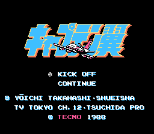
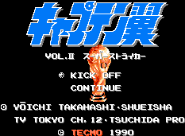

Captain Tsubasa - Nintendo Games
Captain Tsubasa Part 1

Company:
Tecmo
Price (in yen):
5500
Genre:
Soccer simulation
Captain Tsubasa Part 2 Super Striker

Company:
Tecmo
Price (in yen):
6900
Genre:
Soccer simulation
Anime Video Game Resource Center © 1998 by
Luis A. Cruz